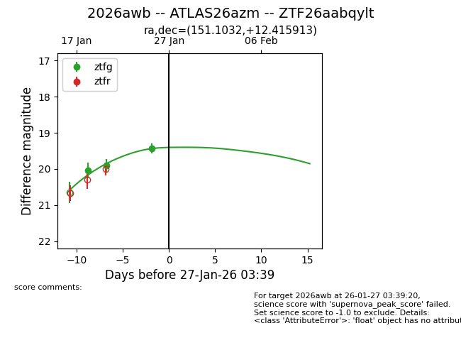
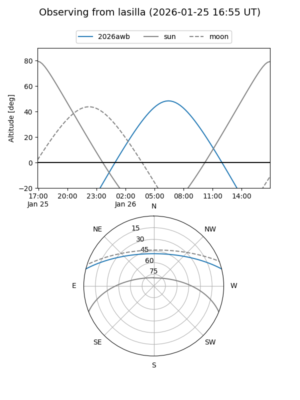
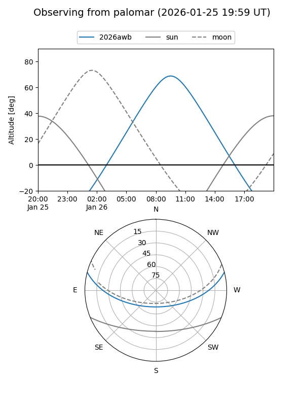
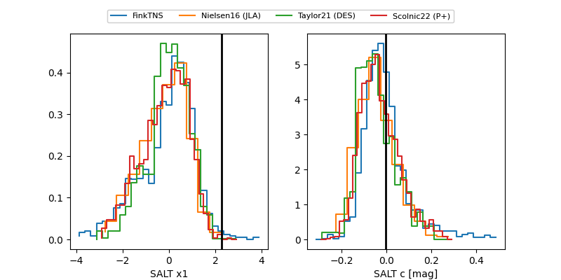

2026awb
Target 2026awb at 2026-01-24 03:16
Aliases and brokers:
FINK: link
Lasair: link
ALeRCE: link
TNS: link
YSE: link
alt names
ZTF26aabqylt (ztf,fink_ztf)
2026awb (tns,yse)
ATLAS26azm (atlas)
Coordinates:
equatorial (ra, dec) = 151.1032,+12.41591
equatorial (HMS+DMS) = 10:04:24.77,+12:24:57.29
galactic (l, b) = (225.1512,+48.28204)
Flags:
Photometry:
last ztfg=19.91
2 ztfg detections
Lightcurve

Visibility


Additional plots
